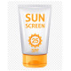

sunscreen
برای پوست های خشک و معمولی:
sunscreen cream Seagull N=1 PRN
برای پوست های چرب :
sunscreen Rassan Oil Free
چند نمونه از ضد آفتاب های خارجی:
ضد آفتاب فرانسوی Avene مدل Cleanance برای افرادی که پوست چرب دارند مستعد جوش هستند
کرم ضد افتاب SUN SENSE برای افراد با پوست چرب
کرم ضد افتاب Ellaro خواصیت پوشانندگی لک و جوش هم دارد مناسب خانم ها